This is a special section that I want to dedicate to my cats. I have been a cat owner since I was 5 and theses cats have been a part of my life and has helped me through some of the rough times of my life. So, I personally think they deserve their own page as they also represent a part of me! 😸
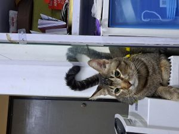
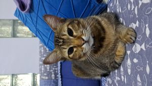
Batch 1: 20/12/2020
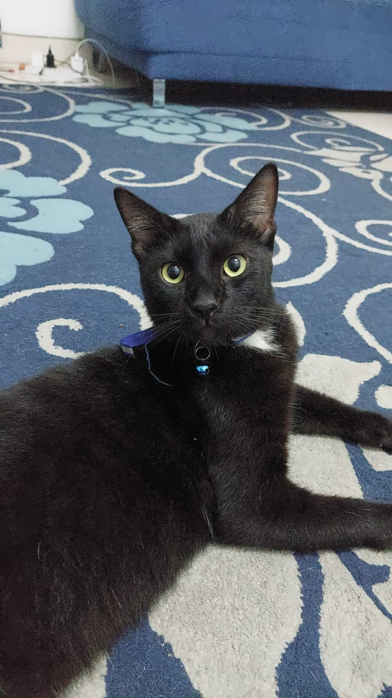
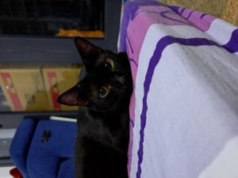
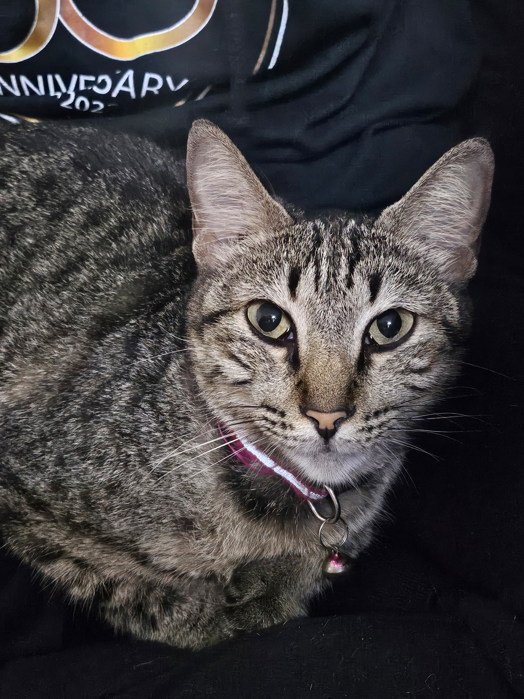
Batch 2: 26/4/2021
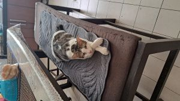
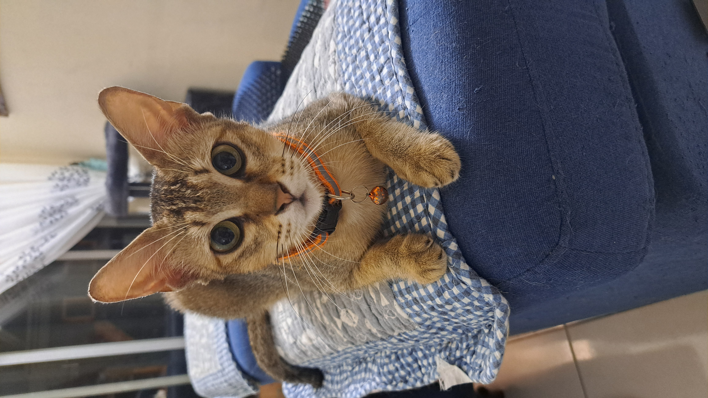
Batch 3: 5/4/2022
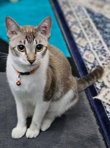
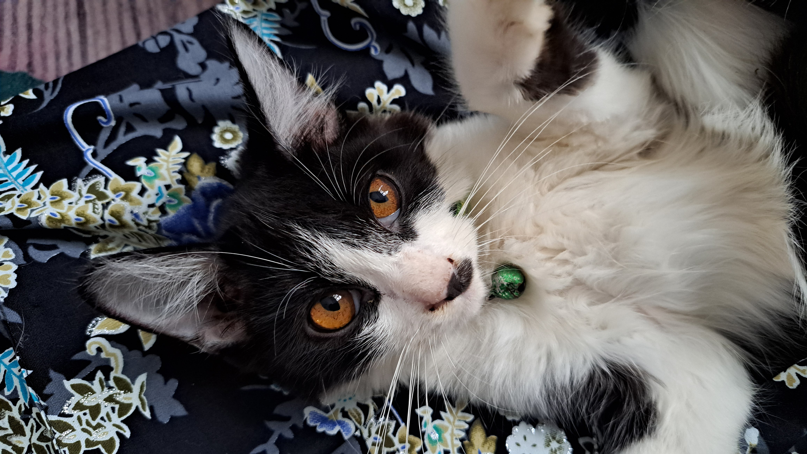
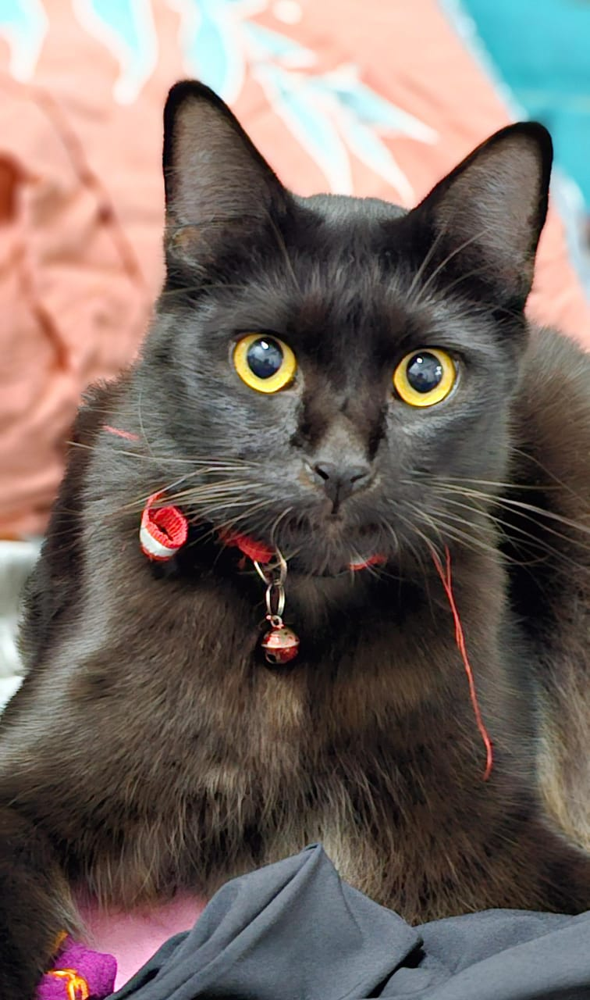
Batch 4: 12/11/2023
This last one is a special mention. She's gone missing for over 3 years at this point but will always be remembered. She is the mother of the other cats and grandma to batch 4. Thus, she is special in her own way💕
 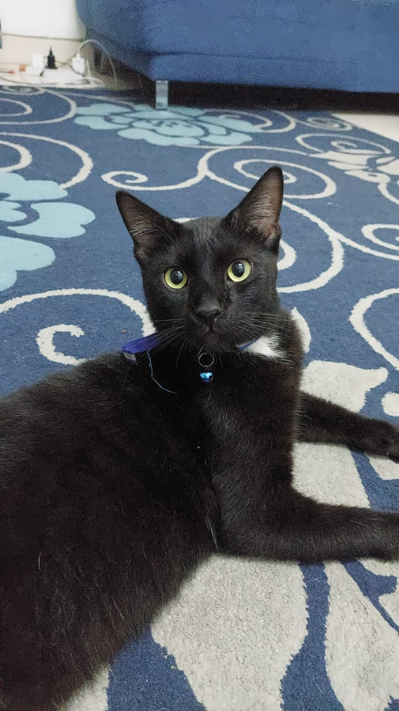
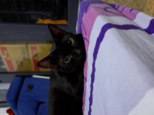
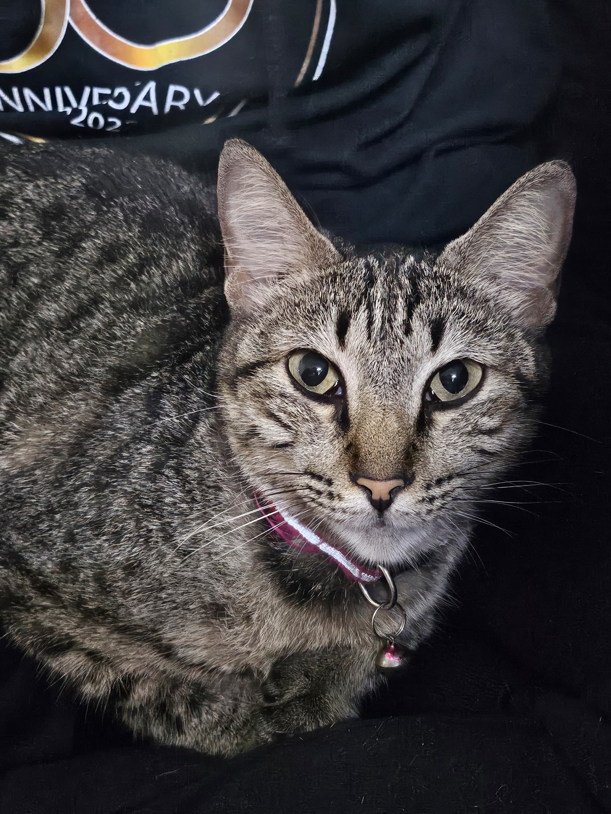
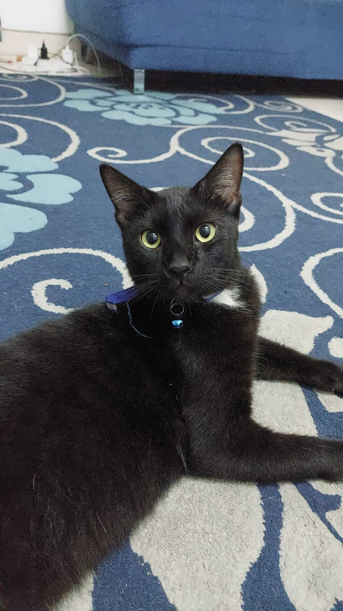
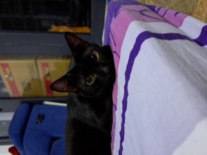
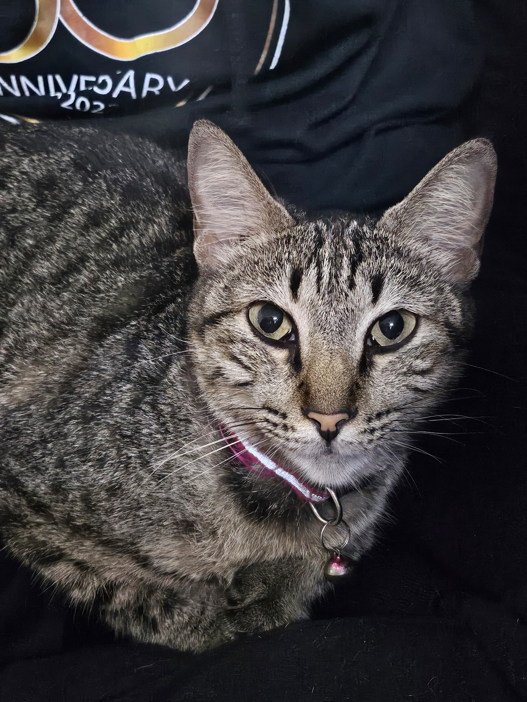